The solution of a large size sparse linear system of equations
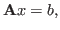 |
(1) |
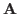
is a SPD matrix, requires the use of iterative methods based on Krylov subspaces. It is well known, however, that the use of these methods alone generally provide poor convergence. This can be remedied by using their preconditioned form, which requires the definition of a preconditioner, i.e., a linear transformation that approximates the action of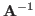
.In this paper, two new preconditioners built upon the dynamic FSAI algorithm [Janna et al., 2015] are considered: the BTFSAI - Block Tridiagonal Factorized Sparse Approximate Inverse - and the DDFSAI - Domain Decomposition Factorized Sparse Approximate Inverse. The first one is based on the successive application of the FSAI algorithm on the matrix reordered in a block tridiagonal structure and the second one is based on the combination of a two level domain decomposition approach and the FSAI preconditioner, which is used for computing the approximate inverse of the inner submatrices and the Schur complement.
In the Block Tridiagonal preconditioner - BTFSAI - the matrix is first reordered by the reverse Cuthill-McKee algorithm, with the aim to reduce its bandwidth, and then it is divided into a block tridiagonal structure according to a given number of blocks. After that, the block LDU decomposition of this new matrix is calculated where the inverses of the diagonal blocks are approximated explicitly by the adaptive FSAI algorithm.
With this approach, the global matrix is subdivided into small blocks, that should be approximated with less effort. Though this method is intrinsically sequential, parallelism can be exploited for each block by the use of the FSAI algorithm. Calling
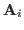
the SPD diagonal submatrix and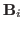
the upper diagonal submatrix of the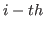
block, the block LDU decomposition reads
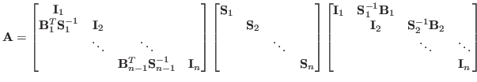 |
(2) |
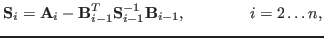 |
(3) |
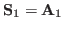
, by definition. Let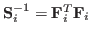
be the approximate inverse of the Schur complement computed by the adaptive FSAI algorithm and let the matrix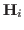
be equal to the product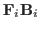
, it follows that the Schur complement recursively as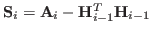
. Using these relations, the approximate inverse of the matrix reads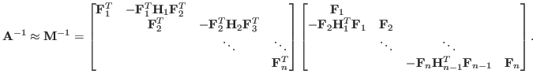 |
(4) |
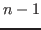
Schur complements along with their FSAI approximations. While theoretically these matrices should be SPD, the use of approximate inverses may cause the loss of this property. Indeed, for some matrices, we can have indefinite Schur complements if the approximate inverses are not accurate enough. In this case, the construction of the preconditioner should be restarted allowing for a larger number of nonzero entries per row.
Roughly speaking, domain decomposition refers to a number of techniques which solve a
problem defined on a large domain  via the solution of smaller problems defined
over subdomains
via the solution of smaller problems defined
over subdomains
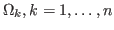
. Each problem can be solved independently and the solutions can be gathered to build the outcome of the original problem.In the domain decomposition FSAI preconditioner - DDFSAI - the graph of the original matrix is reordered according to the k-way partition algorithm implemented in the METIS software library. With this method, the number of edges connecting a subdomain to the others is minimized, thus reducing the pieces of information that need to be communicated among different blocks. At the same time, the size of subdomains is kept to be approximately of the same order in favour of providing a good load balance among different threads, which are going to work in one or possibly more blocks. After this, each independent block of the matrix is reordered according to the reverse Cuthill-McKee algorithm in order to reduce its bandwidth.
The algorithm for constructing the DDFSAI preconditioner is almost the same as BTFSAI restricted to two blocks, with the only difference consisting in the initial ordering of the matrix, which in the current case uses the METIS library besides of the reverse Cuthill-McKee ordering.
The results show that the BTFSAI technique is very promising in terms of decreasing the total number of iterations and time for achieving the solution. Further, with the DDFSAI technique, the computational pain is smaller, but stability and scalability are generally better. We remark that these strategies are under development and further computational improvements are being addressed, for instance a hybrid MPI/OpenMP implementation.